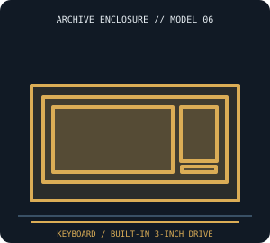

[ IDENTIFIED SYSTEM // AMSTRAD CPC 6128 ]
Amstrad CPC 6128 Computer Enclosure
Keyboard-integrated desktop with built-in 3-inch disk drive; approximate main-unit dimensions 41.0 × 25.0 × 7.0 cm (W × D × H), monitor sold separately.

MODEL / REVISION BOUNDARY: The 6128 includes a built-in disk unit and 128-KiB memory, unlike the CPC 464 tape model and 664. Bundled monitor/power configurations vary by market.
Enclosure specifications
| Exact model / generation | Amstrad CPC 6128, 128-KiB keyboard computer, 1985; distinguish CPC 6128 from 464/664 and monitor bundles. |
|---|---|
| External dimensions | Approximately 41.0 × 25.0 × 7.0 cm (W × D × H) for the computer unit only; GT65/CTM monitor or external drive adds separate footprint and cables. |
| Form factor / board layout | Low-profile keyboard computer with proprietary board and integrated 3-inch disk mechanism; monitor is external and often provided power to the computer. |
| Proprietary power supply | CPC 6128 has no ATX PSU: its DC power is normally supplied through the model-specific monitor power cable/adapter arrangement. Match voltage, polarity and CPC/monitor version; do not connect an arbitrary supply. |
| External bays / ports | No standard expansion bays. Rear expansion and disk connectors accept external CPC-specific peripherals; the monitor is a separate enclosure. |
| Internal bays / mounts | One integrated 3-inch disk drive behind the computer’s drive opening; no standard PC bay. |
| Service / compatibility | Use the CPC6128 service manual and user instructions; verify monitor type, regional power arrangements, drive belt and board revision. Preserve keyboard clips and fragile case plastics. |
| Revision identification | The 6128 includes a built-in disk unit and 128-KiB memory, unlike the CPC 464 tape model and 664. Bundled monitor/power configurations vary by market. |
Service, restoration & fit notes
Use the CPC6128 service manual and user instructions; verify monitor type, regional power arrangements, drive belt and board revision. Preserve keyboard clips and fragile case plastics.
CPC 6128 has no ATX PSU: its DC power is normally supplied through the model-specific monitor power cable/adapter arrangement. Match voltage, polarity and CPC/monitor version; do not connect an arbitrary supply.
- Record the full model/type label, board and power-supply assembly numbers, drive labels and manual revision before disassembly.
- Preserve original shields, brackets, hinges, feet, keyboard/CRT harnesses and proprietary fasteners with this exact enclosure; do not assume contemporary PC standards apply.
- Dimensions are approximate where noted; measure the actual specimen and leave clearance for cables, vents, lids/handles and attached peripherals.
Manufacturer & archival manual citations
- Amstrad CPC6128 Service Manual (1985) — Internet ArchiveAmstrad service manual for the 6128 model and its hardware.
- AMSTRAD CPC6128 User Instructions — Internet ArchiveAmstrad operator manual for the CPC 6128.
Manuals may cover only a stated revision or configuration; compare the title page and machine labels before applying procedures.